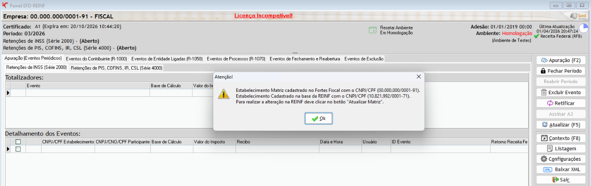
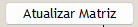
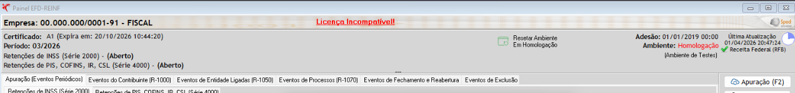
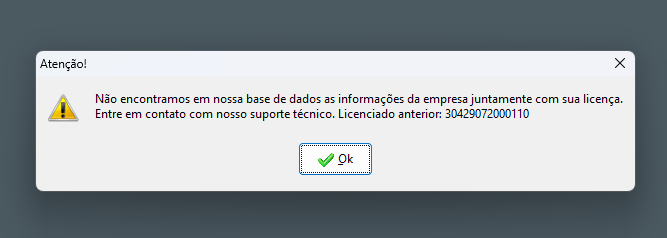
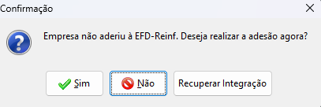
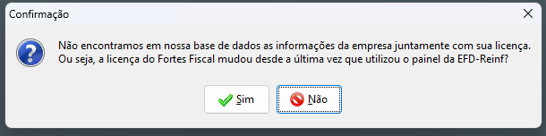
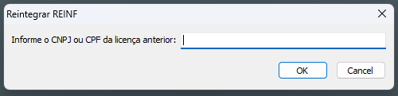
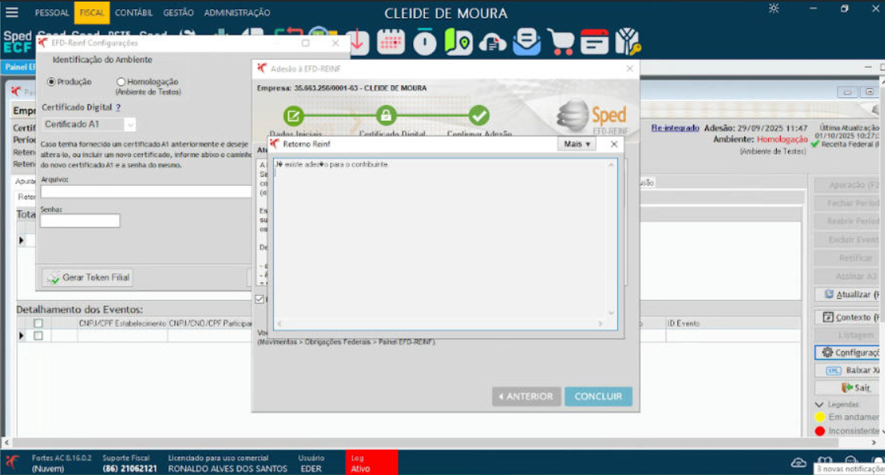
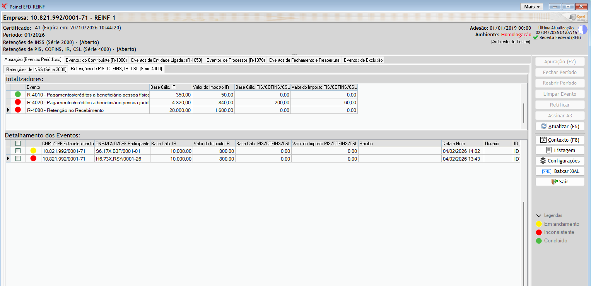
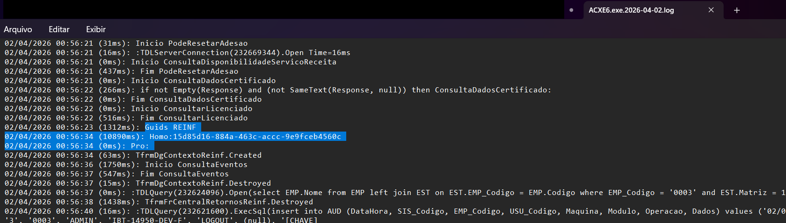

Situações que fogem do fluxo padrão de atendimento —
entenda a causa raiz e como resolver cada uma.
➡ use as setas do teclado para navegar
Clique em qualquer card para navegar diretamente ao cenário.
O CNPJ da empresa no Fortes Fiscal é diferente do que está registrado no serviço da REINF
⚠ Sintoma — aviso ao abrir o painel


A licença atual do Fortes é diferente da que está registrada no serviço da REINF
⚠ Sintoma — texto clicável no topo do painel

O texto em vermelho é clicável — essa é a solução.
Base local sem integração + licença diferente da que está no serviço da REINF
⚠ Erro retornado ao confirmar

Sequência de telas — Recuperar Integração
Passo 1

Passo 2

Passo 3 — Confirmação

"Já existe adesão para o contribuinte" — como diagnosticar e resolver
⚠ Sintoma — retorno da tentativa de adesão

Fluxo resumido:
① Reset ambiente de Homologação
② Acessar com usuário do cliente
③ Verificar se exibe licenciado anterior
↳ Sim → usar SOS + CNPJ anterior (Cenário 03)
↳ Não → recuperar vínculo com SOS direto
Funcionalidades exclusivas do usuário de emergência (SOS) dentro do Painel EFD-REINF
Visível em Produção e Produção Restrita apenas para SOS. Para usuário comum, só aparece se ServicoReinf.PodeResetarAdesao = true ou sem data de adesão.
Banner só fica visível para SOS quando o CNPJ licenciado difere do cliente atual. Diagnóstico exclusivo de suporte — usuário comum não vê.
Ação só executa para SOS. Confirma e chama TServicoReinf.AtualizarLicenca com CNPJ + licença atual. Registra auditoria automaticamente.
Menu visível apenas para SOS ou MasterUser. Apaga eventos de apuração somente na base local, sem comunicação com a Receita Federal.
Menu "Recibo de Adesão" visível para SOS em adesões com retorno MS1005, independentemente do retorno atual.
Para SOS, fica visível quando evento está com status Em Andamento. Usuário comum só vê se houver mensagem específica de reenvio.
O que coletar e quando anexar no chamado de suporte REINF

Sempre — em todos os chamados relacionados à REINF, independente do problema relatado.

Quando houver problema de acesso ao painel ou quando solicitado pelo desenvolvimento.
Sempre que o problema envolver valores incorretos ou divergência de dados nos eventos.
Situações Diversas — conteúdo em construção.
Mais cenários serão adicionados conforme levantamento.